library(data.table)
library(devtools)
library(sf)
library(usmap)
library(purrr)
library(ggplot2)
library(mapview)
library(magrittr)
library(kableExtra)
library(here)
library(spdep)7 Spatial analysis with US Census data
Load the Required R Packages from CRAN:
Load the packages ‘deandevl/RcensusPkg’, ‘deandevl/RplotterPkg’ and ‘deandevl/RspatialPkg’.
devtools::install_github('deandevl/RcensusPkg')
devtools::install_github('deandevl/RspatialPkg')
devtools::install_github('deandevl/RplotterPkg')Establish an output directory for all downloaded shapefiles.
output_dir <- file.path(here::here(), "shapefiles")7.1 Spatial overlay
In this representation, different components of the landscape that interact in the real world are abstracted out into different layers, represented by different geometries. For example, Census tracts might be represented as polygons; customers as points; and roads as linestrings.
7.1.1 Note: aligning coordinate reference systems
In any workflow using spatial overlay, including all of the methods discussed in this chapter, it is essential that all layers share the same CRS for overlay methods to work.
Use the sf::st_transform() to transform data toe the projected CRS.
7.1.2 Identifying geometries within a metropolitan area
Given that Census spatial datasets are designed to align with one another, spatial overlay can be used to identify geographic features that fall within a given metropolitan area and extract those features.
Overlay the boundary geometries of the Kansas City metropolitan area with the state tract boundaries of Kansas and Missouri.
Get the fips numbers for the states of Kansas and Missouri:
ks_fips <- usmap::fips(state = "kansas")
mo_fips <- usmap::fips(state = "missouri")Get the combined tracts of both states:
ks_mo_tracts_sf <- purrr::map_dfr(
c(ks_fips, mo_fips),
~{RcensusPkg::tiger_tracts_sf(
state = .x,
general = TRUE,
transform_crs = 8528,
sf_info = FALSE,
output_dir = output_dir,
)
}
)Get the metropolitan area (core-based statistical area) of Kansas City:
kc_metro_sf <- RcensusPkg::tiger_cbsa_sf(
general = TRUE,
city_filter = "Kansas City",
transform_crs = 8528,
sf_info = FALSE,
output_dir = output_dir
)Map the overlay of metropolitan area geometries with the Kansas-Missouri tracts geometries:
RspatialPkg::get_geom_sf(
sf = ks_mo_tracts_sf,
hide_x_tics = T,
hide_y_tics = T,
sf_fill = "white",
sf_color = "gray",
panel_color = "white",
panel_border_color = "white"
) +
RspatialPkg::get_geom_sf(
sf = kc_metro_sf,
sf_color = "red",
sf_alpha = 0.0,
sf_linewidth = 0.5,
adding = TRUE
)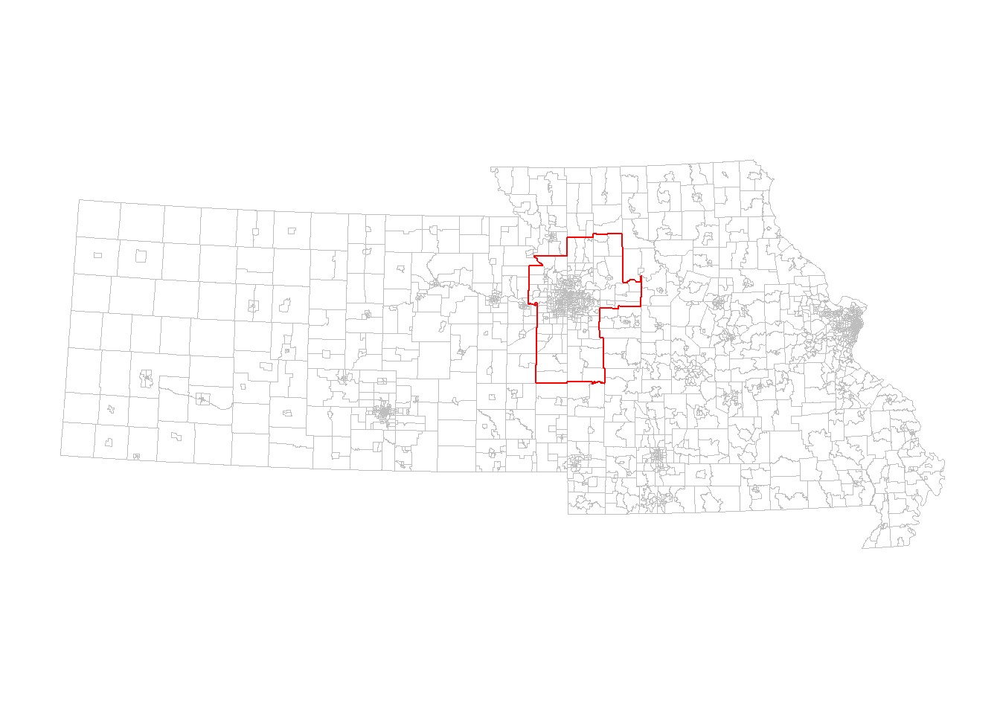
7.1.3 Spatial subsets and spatial predicates
Subset and map ks_mo_tracts_sf tract geometries to just the CBSA Kansas City geometries kc_metro_sf.
Note that
[] operator is using the default spatial function sf::st_intersect() to accomplish the intersection. It returns tracts that are within the metro’s boundary and those that cross or touch the boundary.kc_tracts_sf <- ks_mo_tracts_sf[kc_metro_sf,]
RspatialPkg::get_geom_sf(
sf = kc_tracts_sf,
sf_fill = "white",
sf_color = "grey",
panel_color = "white",
panel_border_color = "white",
hide_x_tics = T,
hide_y_tics = T
) +
RspatialPkg::get_geom_sf(
sf = kc_metro_sf,
sf_color = "red",
sf_alpha = 0.0,
sf_linewidth = 0.5,
adding = TRUE
)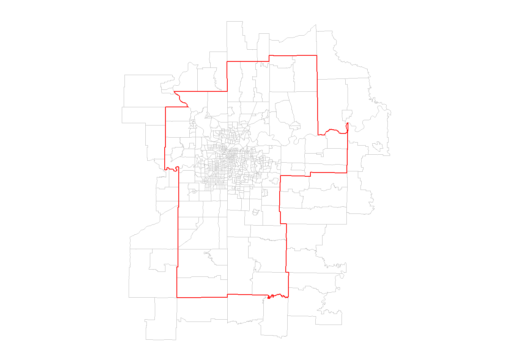
Use the spatial predicate sf::st_within() to return tracts only within the Kansas City CBSA geometries.
kc_tracts_within_sf <- kc_tracts_sf[kc_metro_sf, op = sf::st_within]RspatialPkg::get_geom_sf(
sf = kc_tracts_within_sf,
sf_fill = "white",
sf_color = "grey",
panel_color = "white",
panel_border_color = "white",
hide_x_tics = T,
hide_y_tics = T
) +
RspatialPkg::get_geom_sf(
sf = kc_metro_sf,
sf_color = "red",
sf_alpha = 0.0,
sf_linewidth = 0.5,
adding = TRUE
)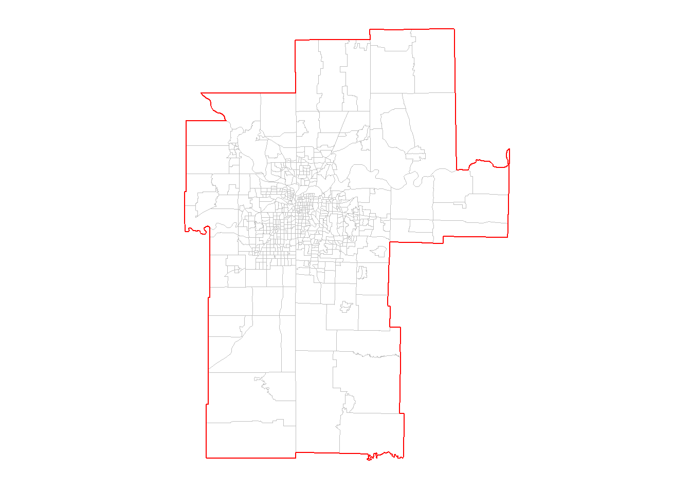
7.2 Spatial joins
7.2.1 Point-in-polygon spatial joins
Let’s consider a hypothetical task where a health data analyst in Gainesville, Florida needs to determine the percentage of residents age 65 and up who lack health insurance in patients’ neighborhoods. The analyst has a dataset of patients with patient ID along with longitude and latitude information.
Create a hypothetical dataset:
gainesville_patients_dt <- data.table(
patient_id = 1:10,
longitude = c(-82.308131, -82.311972, -82.361748, -82.374377,
-82.38177, -82.259461, -82.367436, -82.404031,
-82.43289, -82.461844),
latitude = c(29.645933, 29.655195, 29.621759, 29.653576,
29.677201, 29.674923, 29.71099, 29.711587,
29.648227, 29.624037)
)| patient_id | longitude | latitude |
|---|---|---|
| 1 | -82.30813 | 29.64593 |
| 2 | -82.31197 | 29.65519 |
| 3 | -82.36175 | 29.62176 |
| 4 | -82.37438 | 29.65358 |
| 5 | -82.38177 | 29.67720 |
| 6 | -82.25946 | 29.67492 |
Using sf::st_as_sf() convert the dataframe to a simple features object with a geometry column:
By convention, the coordinate reference system used for longitude / latitude data is WGS 1984, represented with the EPSG code 4326. We’ll need to specify this CRS in st_as_sf() so that sf can locate the points correctly before we transform to an appropriate projected coordinate reference system with st_transform().
gainesville_sf <- gainesville_patients_dt %>%
sf::st_as_sf(coords = c("longitude","latitude"), crs = 4326) %>%
sf::st_transform(6440)Map the sf with mapview():
mapview::mapview(
x = gainesville_sf,
col.regions = "red",
legend = F
)Figure 7.5: Map of hypothetical patient locations in Gainsville, Florida
Acquire health insurance percent (“DP03_0096PE”,“DP03_0096PM”) coverage by tract from the American Community Survey (“acs/acs5/profile”). Gainsville is within Alachua County, Florida with data available from the 2015-2019 5-year ACS.
fl_alachua_fips <- usmap::fips(state = "florida", county = "alachua")
fl_fips <- substr(fl_alachua_fips,1,2)
alachua_fips <- substr(fl_alachua_fips,3,5)
alachua_insurance_dt <- RcensusPkg::get_vintage_data(
dataset = "acs/acs5/profile",
vintage = 2019,
vars = c("DP03_0096PE", "DP03_0096PM"),
region = "tract:*",
regionin = paste0("state:", fl_fips, "+county:", alachua_fips)
) %>%
data.table::setnames(., old = c("DP03_0096PE", "DP03_0096PM"),new = c("pct_insured","pct_insured_moe")) %>% .[, .(GEOID, pct_insured, pct_insured_moe)] %>%
.[, `:=`(pct_insured = as.numeric(pct_insured), pct_insured_moe = as.numeric(pct_insured_moe))]Acquire the tract data for Alachua County and merge the Alachua insurance data based on their cooresponding GEOID values.
express <- expression(COUNTYFP == "001")
alachua_insurance_sf <- RcensusPkg::tiger_tracts_sf(
state = fl_fips,
vintage = 2019,
general = TRUE,
express = express,
datafile = alachua_insurance_dt,
datafile_key = "GEOID",
sf_info = FALSE,
output_dir = output_dir
) %>%
data.table::as.data.table(.) %>%
.[, .(GEOID, pct_insured, pct_insured_moe, geometry)] %>%
.[, `:=`(pct_insured = as.numeric(pct_insured), pct_insured_moe = as.numeric(pct_insured_moe))] %>%
sf::st_as_sf() %>%
sf::st_transform(4326) %>%
sf::st_transform(., 6440)Before computing the spatial join, layer the point data over the Gainsville, Florida tracts using mapview.
mapview(
alachua_insurance_sf,
zcol = "pct_insured",
layer.name = "% with health<br/>insurance"
) +
mapview(
gainesville_sf,
col.regions = "red",
legend = FALSE
)Figure 7.6: Layered interactive view of patients and Census tracts in Gainesville
Compute the spatial join between simple features gainesville_sf tract geometries and the alachua_insurance_sf data related geometries using sf::st_join() function.
patients_joined_sf <- sf::st_join(
gainesville_sf,
alachua_insurance_sf
)Note that
sf::st_join() uses sf::st_intersection() by default to match x/y geometries or a point-in-polygon spatial join| patient_id | GEOID | pct_insured | pct_insured_moe | geometry |
|---|---|---|---|---|
| 1 | 12001000700 | 81.6 | 7.0 | POINT (812216.7 73640.25) |
| 2 | 12001000500 | 91.0 | 5.1 | POINT (811825.2 74659.57) |
| 3 | 12001001515 | 85.2 | 6.2 | POINT (807076.4 70862.57) |
| 4 | 12001001603 | 88.3 | 5.1 | POINT (805787.7 74365.85) |
| 5 | 12001001100 | 96.2 | 2.7 | POINT (805023.4 76970.8) |
| 6 | 12001001902 | 86.0 | 5.9 | POINT (816865.2 76944.63) |
| 7 | 12001001803 | 92.3 | 4.0 | POINT (806340.6 80741.36) |
| 8 | 12001001813 | 97.9 | 1.4 | POINT (802799 80741.87) |
| 9 | 12001002207 | 95.7 | 2.4 | POINT (800134.3 73668.88) |
| 10 | 12001002205 | 96.5 | 1.6 | POINT (797379.2 70937.49) |
7.2.2 Spatial joins and group-wise spatial analysis
7.2.2.1 Spatial join data setup
Let’s say that we are interested in analyzing the distributions of neighborhoods (defined here as Census tracts) by Hispanic population for the four largest metropolitan areas in Texas. We’ll use the variable B01003_001 from the 2019 1-year ACS to acquire population data by core-based statistical area (CBSA) along with simple feature geometry which will eventually be used for the spatial join.
Get the Texas cbsa geometries and merge it with population data. The CRS: NAD83(2011) / Texas Centric Albers Equal Area.
tx_cbsa_geo_sf <- RcensusPkg::tiger_cbsa_sf(
vintage = 2019,
general = TRUE,
state_filter = "TX",
sf_info = F,
output_dir = output_dir
) %>%
sf::st_transform(6579)Get the “B01003_001” population data for just the top 4 metro GEOID locations in tx_cbsa_geo_sf:
tx_metro_pop_dt <- RcensusPkg::get_vintage_data(
dataset = "acs/acs1",
vintage = 2019,
vars = c("B01003_001E","B01003_001M")
) %>%
data.table::setnames(old = c("B01003_001E","B01003_001M"), new = c("estimate", "moe")) %>%
.[, `:=`(estimate = as.numeric(estimate), moe = as.numeric(moe))] %>%
.[GEOID %in% tx_cbsa_geo_sf$GEOID] %>%
.[order(-estimate)] %>%
.[1:4,]Join the dataframe tx_metro_pop_dt with the geometries provided by dataframe tx_cbsa_geo_sf based on their common “GEOID” values:
tx_cbsa_sf <- RcensusPkg::join_it(
df_1 = tx_cbsa_geo_sf,
df_2 = tx_metro_pop_dt,
key_1 = "GEOID",
key_2 = "GEOID",
) %>%
.[, `:=`(variable = "B01003_001", moe = NA)] %>%
.[, .(GEOID, NAME, variable, estimate, moe, geometry)] %>%
.[order(-estimate)] %>%
sf::st_as_sf()| GEOID | NAME | variable | estimate | moe | geometry |
|---|---|---|---|---|---|
| 19100 | Dallas-Fort Worth-Arlington, TX | B01003_001 | 7573136 | NA | MULTIPOLYGON (((1681247 760... |
| 26420 | Houston-The Woodlands-Sugar Land, TX | B01003_001 | 7066140 | NA | MULTIPOLYGON (((2009903 730... |
| 41700 | San Antonio-New Braunfels, TX | B01003_001 | 2550960 | NA | MULTIPOLYGON (((1538306 729... |
| 12420 | Austin-Round Rock-Georgetown, TX | B01003_001 | 2227083 | NA | MULTIPOLYGON (((1664195 732... |
Obtain data on percent of Hispanic by tract from the ACS Data Profile for 2015-2019.
tx_fips <- usmap::fips(state = "texas")
pct_hispanic_dt <- RcensusPkg::get_vintage_data(
dataset = "acs/acs5/profile",
vintage = 2019,
vars = c("DP05_0071PE","DP05_0071PM"),
region = "tract:*",
regionin = paste0("state:", tx_fips)
)Obtain the geometries for tracts in the state of Texas and merge the percent of Hispanic data.
pct_hispanic_sf <- RcensusPkg::tiger_tracts_sf(
state = tx_fips,
vintage = 2019,
general = TRUE,
datafile = pct_hispanic_dt,
datafile_key = "GEOID",
transform_crs = 6579,
sf_info = F,
output_dir = output_dir
) %>%
data.table::as.data.table(.) %>%
data.table::setnames(.,old = c("DP05_0071PE","DP05_0071PM"), new = c("estimate","moe")) %>%
.[, `:=`(estimate = as.numeric(estimate), moe = as.numeric(moe), variable = "DP05_0071PE")] %>%
.[, .(GEOID, NAME, variable, estimate, moe, geometry)] %>%
sf::st_as_sf()| GEOID | NAME | variable | estimate | moe | geometry |
|---|---|---|---|---|---|
| 48001950100 | Census Tract 9501, Anderson County, Texas | DP05_0071PE | 12.0 | 5.8 | MULTIPOLYGON (((1905956 754... |
| 48001950401 | Census Tract 9504.01, Anderson County, Texas | DP05_0071PE | 25.1 | 2.6 | MULTIPOLYGON (((1892475 752... |
| 48001950402 | Census Tract 9504.02, Anderson County, Texas | DP05_0071PE | 23.2 | 2.9 | MULTIPOLYGON (((1879518 752... |
| 48001950500 | Census Tract 9505, Anderson County, Texas | DP05_0071PE | 38.5 | 8.2 | MULTIPOLYGON (((1907352 752... |
| 48001950600 | Census Tract 9506, Anderson County, Texas | DP05_0071PE | 3.2 | 2.7 | MULTIPOLYGON (((1905825 751... |
| 48001950700 | Census Tract 9507, Anderson County, Texas | DP05_0071PE | 34.6 | 6.6 | MULTIPOLYGON (((1911228 752... |
7.2.2.2 Computing and visualizing the spatial join
We have a total of 5254 tracts in the state of Texas with Hispanic percentage. To reduce the number of tracts, select only those tract geometries that are within the four metropolitan areas.
hispanic_by_metro_sf <- sf::st_join(pct_hispanic_sf,tx_cbsa_sf, join = st_within, suffix = c("_tracts", "_metro"), left = F)We have reduced the number of tracts to 3189.
| GEOID_tracts | NAME_tracts | variable_tracts | estimate_tracts | moe_tracts | GEOID_metro | NAME_metro | variable_metro | estimate_metro | moe_metro | geometry | |
|---|---|---|---|---|---|---|---|---|---|---|---|
| 42 | 48013960100 | Census Tract 9601, Atascosa County, Texas | DP05_0071PE | 62.1 | 6.8 | 41700 | San Antonio-New Braunfels, TX | B01003_001 | 2550960 | NA | MULTIPOLYGON (((1647089 720... |
| 43 | 48013960201 | Census Tract 9602.01, Atascosa County, Texas | DP05_0071PE | 68.3 | 6.9 | 41700 | San Antonio-New Braunfels, TX | B01003_001 | 2550960 | NA | MULTIPOLYGON (((1616126 722... |
| 44 | 48013960202 | Census Tract 9602.02, Atascosa County, Texas | DP05_0071PE | 76.0 | 3.9 | 41700 | San Antonio-New Braunfels, TX | B01003_001 | 2550960 | NA | MULTIPOLYGON (((1618776 721... |
| 45 | 48013960300 | Census Tract 9603, Atascosa County, Texas | DP05_0071PE | 83.1 | 6.2 | 41700 | San Antonio-New Braunfels, TX | B01003_001 | 2550960 | NA | MULTIPOLYGON (((1634154 721... |
| 46 | 48013960401 | Census Tract 9604.01, Atascosa County, Texas | DP05_0071PE | 70.3 | 12.8 | 41700 | San Antonio-New Braunfels, TX | B01003_001 | 2550960 | NA | MULTIPOLYGON (((1639999 722... |
| 47 | 48013960402 | Census Tract 9604.02, Atascosa County, Texas | DP05_0071PE | 46.6 | 5.6 | 41700 | San Antonio-New Braunfels, TX | B01003_001 | 2550960 | NA | MULTIPOLYGON (((1638944 720... |
Plot the density distribution of hispanic percent across the 4 metro areas.
Reshape hispanic_by_metro_sf from long to wide format:
hispanic_by_metro_dt <- data.table::as.data.table(hispanic_by_metro_sf) %>%
.[estimate_tracts != -666666666, .(estimate_tracts, NAME_tracts, NAME_metro)] %>%
RcensusPkg::long_to_wide(id_v = "NAME_tracts", parameter_col = "NAME_metro", value_col = "estimate_tracts") %>%
data.table::setnames(old = names(.), new = c("tracts", "Austin", "Dallas", "Houston", "SanAntonio"))Plot the densities using RplotterPkg::create_density_ridge_plot():
RplotterPkg::create_density_ridge_plot(
df = hispanic_by_metro_dt,
variables = names(hispanic_by_metro_dt)[2:5],
x_major_breaks = seq(0, 100, 25),
x_limits = c(0, 100),
x_title = "Percent Hispanic/Latino in Census tract",
y_major_breaks = seq(0.0, 0.03, 0.01),
y_limits = c(0.0, 0.03),
y_show_axis = TRUE,
plot_widths = 15,
plot_heights = 6.0,
density_color = "navy",
density_fill = "navy"
)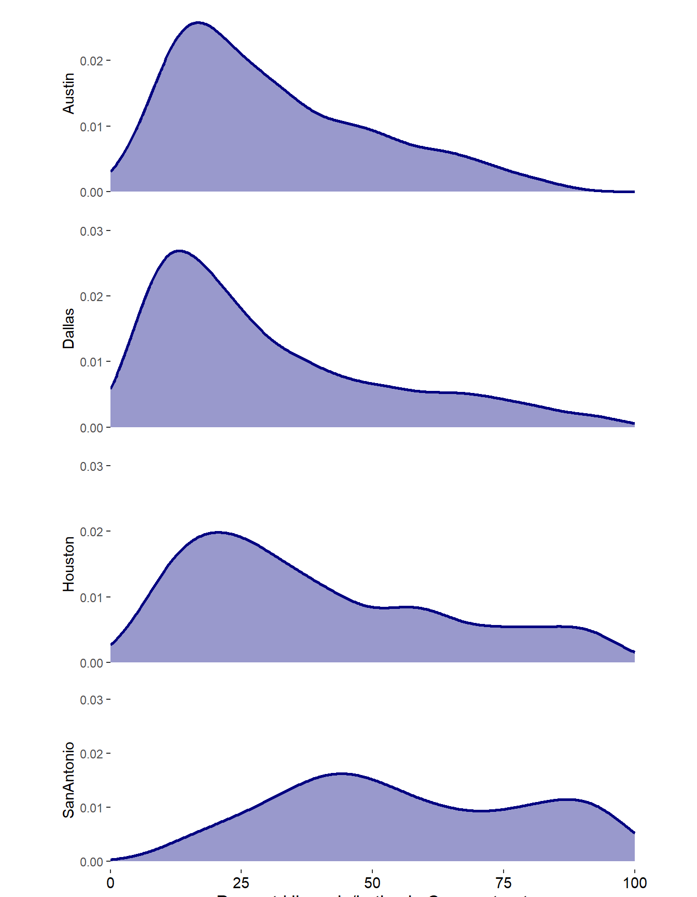
Output from a spatial join operation can also be “rolled up” to a larger geography through group-wise data analysis.
Using basic data.table techniques, group by the 4 Texas metro areas and find their respective hispanic percent median values.
median_by_metro_sf <- data.table::as.data.table(hispanic_by_metro_sf) %>%
.[, .(median_est = median(.SD$estimate_tracts, na.rm = T), geometry = sf::st_union(geometry)), by = NAME_metro] %>%
sf::st_as_sf(.)| NAME_metro | median_est | geometry |
|---|---|---|
| San Antonio-New Braunfels, TX | 52.60 | POLYGON ((1619499 7170517, ... |
| Houston-The Woodlands-Sugar Land, TX | 32.40 | MULTIPOLYGON (((1901162 724... |
| Austin-Round Rock-Georgetown, TX | 25.85 | POLYGON ((1700741 7302450, ... |
| Dallas-Fort Worth-Arlington, TX | 22.55 | POLYGON ((1737530 7565076, ... |
| NA | NA | GEOMETRYCOLLECTION EMPTY |
| NA | NA | GEOMETRYCOLLECTION EMPTY |
Map the grouped geometry of the “Austin-Round Rock-Georgetown, TX” metro area.
austin_sf <- sf::st_as_sf(data.table::as.data.table(median_by_metro_sf)[3,])
austin_plot <- RspatialPkg::get_geom_sf(
sf = austin_sf,
sf_fill = "white",
hide_x_tics = T,
hide_y_tics = T,
panel_color = "white",
panel_border_color = "white"
)
austin_plot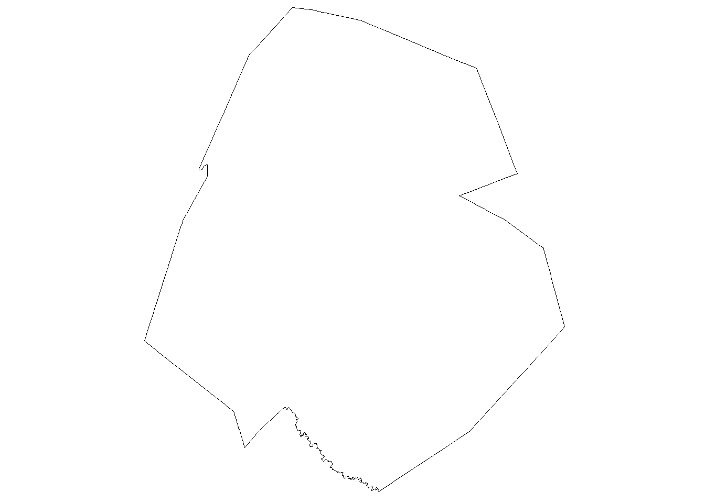
7.3 Small area time-series analysis
Compare Census tract boundaries for a fast-growing area of Gilbert, Arizona (southeast of Phoenix) for 2015 and 2020.
az_fips <- usmap::fips(state = "AZ")
# get 2015 tracts
gilbert_2015_express <- expression(GEOID == "04013816000")
gilbert_2015_tracts_sf <- RcensusPkg::tiger_tracts_sf(
state = az_fips,
vintage = 2015,
general = TRUE,
express = gilbert_2015_express,
sf_info = FALSE,
output_dir = output_dir
)
# get 2020 tracts
gilbert_2020_express <- expression(GEOID %in% c("04013816001","04013816002","04013816003","04013816005","04013816004"))
gilbert_2020_tracts_sf <- RcensusPkg::tiger_tracts_sf(
state = az_fips,
vintage = 2020,
general = TRUE,
express = gilbert_2020_express,
sf_info = FALSE,
output_dir = output_dir
)Plot both the 2015 and 2020 tract geometries using RplotterPkg::multi_panel_grid() function:
gilbert_2015_tracts_plot <- RspatialPkg::get_geom_sf(
sf = gilbert_2015_tracts_sf,
sf_color = "red",
sf_fill = NA,
hide_x_tics = T,
hide_y_tics = T
)
gilbert_2020_tracts_plot <- RspatialPkg::get_geom_sf(
sf = gilbert_2020_tracts_sf,
sf_color = "red",
sf_fill = NA,
hide_x_tics = T,
hide_y_tics = T
)
layout <- list(
plots = list(gilbert_2015_tracts_plot, gilbert_2020_tracts_plot),
rows = c(1, 1),
cols = c(1, 2)
)
RplotterPkg::multi_panel_grid(
layout = layout,
plot_titles = c("2015 tracts","2020 tracts")
)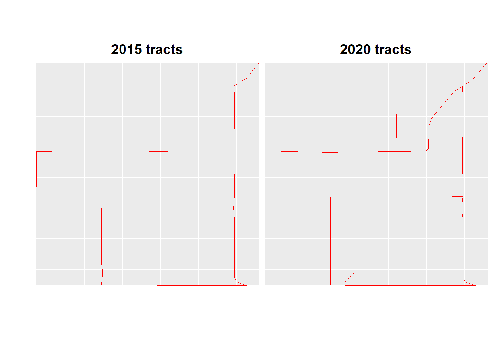
Areal interpolation refers to the allocation of data from one set of zones to a second overlapping set of zones that may or may not perfectly align spatially. In cases of mis-alignment, some type of weighting scheme needs to be specified to determine how to allocate partial data in areas of overlap. Two such approaches for interpolation are outlined here: area-weighted interpolation and population-weighted interpolation.
Area-weighted areal interpolation
This method uses the area of overlap of geometries as the interpolation weights. From a technical standpoint, an intersection is computed between the origin geometries and the destination geometries. Weights are then computed as the proportion of the overall origin area comprised by the intersection.
Use area weights to estimate data at 2020 geographies for the Census tract in Gilbert.
Assign a variable to the land area of Gilbert and create a “proportion” column in the gilbert_2020_tracts_sf dataframe:
area_2015 <- gilbert_2015_tracts_sf$ALAND
gilbert_2020_tracts_sf <- gilbert_2020_tracts_sf %>%
data.table::as.data.table(.) %>%
.[, proportion := round(ALAND/area_2015, digits = 3)] %>%
sf::st_as_sf(.)Plot and label the tracts:
gilbert_2020_tracts_plot <- RspatialPkg::get_geom_sf(
sf = gilbert_2020_tracts_sf,
sf_color = "red",
sf_fill = NA,
subtitle = "2020 tracts",
hide_x_tics = T,
hide_y_tics = T
) +
geom_sf_label(data = gilbert_2020_tracts_sf, aes(label = proportion), fun.geometry = st_centroid)
gilbert_2020_tracts_plot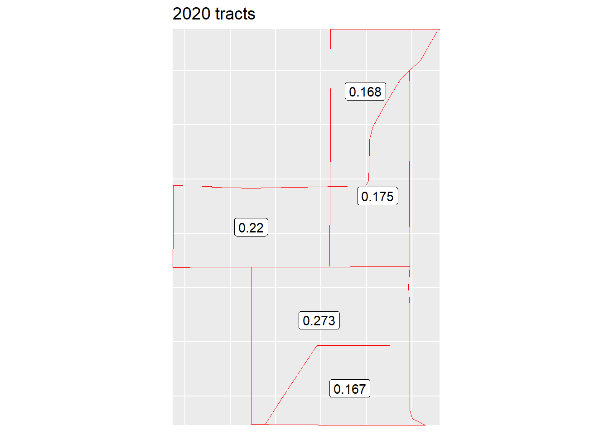
Use sf::st_interpolate_aw interpolation method to compare data for Maricopa County, AZ on the number of people working from home in the 2011-2015 ACS (which uses 2010 boundaries) and the 2016-2020 ACS (which uses 2020 boundaries).
Get both the 2011-2015 and 2016-2020 acs/acs5 data for people working from home (“B08006_017”) for Maricopa County, AZ:
az_fips <- usmap::fips(state = "AZ")
az_maricopa_fips <- usmap::fips(state = "AZ", county = "Maricopa")
maricopa_fips <- substr(az_maricopa_fips,3,5)
wfh_2015_dt <- RcensusPkg::get_vintage_data(
dataset = "acs/acs5",
vintage = 2015,
vars = "B08006_017E",
region = "tract:*",
regionin = paste0("state:", az_fips, "+county:", maricopa_fips)
) %>%
data.table::setnames(old = "B08006_017E", new = "worked_at_home") %>%
.[, worked_at_home := as.numeric(worked_at_home)]
wfh_2020_dt <- RcensusPkg::get_vintage_data(
dataset = "acs/acs5",
vintage = 2020,
vars = "B08006_017E",
region = "tract:*",
regionin = paste0("state:", az_fips, "+county:", maricopa_fips)
) %>%
data.table::setnames(old = "B08006_017E", new = "worked_at_home") %>%
.[, worked_at_home := as.numeric(worked_at_home)]Get the tract geographies for the years and join with the above data:
express <- expression(COUNTYFP == maricopa_fips)
wfh_tracts_2015_sf <- RcensusPkg::tiger_tracts_sf(
state = az_fips,
vintage = 2015,
general = TRUE,
express = express,
datafile = wfh_2015_dt,
datafile_key = "GEOID",
transform_crs = 26949,
sf_info = FALSE,
output_dir = output_dir
) %>%
data.table::as.data.table(.) %>%
.[, .(worked_at_home, geometry)] %>%
sf::st_as_sf(.)
wfh_tracts_2020_sf <- RcensusPkg::tiger_tracts_sf(
state = az_fips,
vintage = 2020,
general = TRUE,
express = express,
datafile = wfh_2020_dt,
datafile_key = "GEOID",
transform_crs = 26949,
sf_info = FALSE,
output_dir = output_dir
)%>%
data.table::as.data.table(.) %>%
.[, .(worked_at_home, geometry)] %>%
sf::st_as_sf(.)Use sf::st_interpolate_aw to estimate area-weighted interpolation:
wfh_interpolate_aw_sf <- sf::st_interpolate_aw(
wfh_tracts_2015_sf,
wfh_tracts_2020_sf,
extensive = TRUE
) %>%
data.table::as.data.table(.) %>%
.[, GEOID := wfh_2020_dt$GEOID] %>%
sf::st_as_sf(.)| worked_at_home | GEOID | geometry |
|---|---|---|
| 362.94291 | 04013061044 | POLYGON ((199614.5 327529.9... |
| 154.61054 | 04013061045 | POLYGON ((225387.6 307155.6... |
| 67.41170 | 04013061046 | POLYGON ((232623.7 304703.7... |
| 80.00828 | 04013061047 | POLYGON ((208921.6 310661.5... |
| 182.85828 | 04013061048 | POLYGON ((206044.3 310398.1... |
| 192.20883 | 04013061049 | POLYGON ((134351 332974, 13... |
7.3.2 Population-weighted areal interpolation
Section has been skipped.
7.3.3 Making small-area comparisons
Section has been skipped.
7.4 Distance and proximity analysis
Consider accessibility to Level I and Level II trauma hospitals by Census tract in the state of Iowa.
Get the US hospital locations:
hospitals_file_path <- file.path(here::here(), "data", "Hospitals.gz")
trauma_sf <- data.table::fread(hospitals_file_path) %>%
unique(., by = "ID") %>%
.[TRAUMA %in% c("LEVEL I", "LEVEL II")] %>%
sf::st_as_sf(., coords = c("LONGITUDE","LATITUDE"), crs=sf::st_crs(4269), remove = FALSE)Get the Census tracts for the state of Iowa:
ia_fips <- usmap::fips(state = "Iowa")
ia_tracts_sf <- RcensusPkg::tiger_tracts_sf(
state = ia_fips,
vintage = 2019,
output_dir = output_dir,
sf_info = F
)7.4.1 Calculating distances
To determine accessibility of Iowa Census tracts to Level I or II trauma centers, we need to identify not only those hospitals that are located in Iowa, but also those in other states near to the Iowa border, such as in Omaha, Nebraska and Rock Island, Illinois.
Apply a distance threshold with sf::st_filter() and st::st_is_within_distance() set at 100km
ia_trauma_sf <- trauma_sf %>%
sf::st_filter(ia_tracts_sf,
.predicate = st_is_within_distance,
dist = 100000) %>%
sf::st_transform(.,sf::st_crs(26975))
ia_tracts_sf <- sf::st_transform(ia_tracts_sf, sf::st_crs(26975))Plot the Trauma centers located within distance of the Iowa tracts:
RspatialPkg::get_geom_sf(
sf = ia_tracts_sf,
sf_color = "gray50",
sf_fill = "gray50",
hide_x_tics = T,
hide_y_tics = T,
panel_color = "white",
panel_border_color = "white"
) + RspatialPkg::get_geom_sf(
sf = ia_trauma_sf,
sf_fill = "red",
sf_size = 4,
adding = T)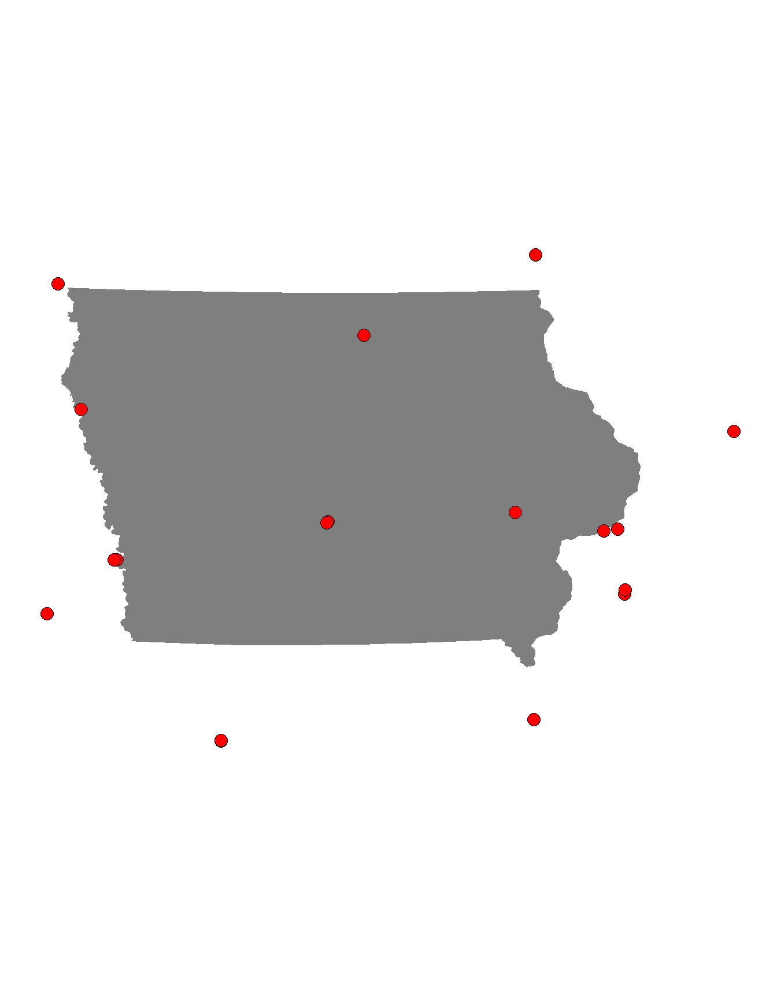
Calculate the distances from the centroids of Iowa Census tracts (reflecting the center points of each tract geometry) to each trauma center.
dist_mt <- ia_tracts_sf %>%
sf::st_centroid() %>%
sf::st_distance(ia_trauma_sf)
min_dist_v <- dist_mt %>%
apply(1, min) %>%
as.vector() %>%
magrittr::divide_by(1000) Show the distribution of the minimum distances in a histogram:
RplotterPkg::create_histogram_plot(
df = data.frame(min_distance = min_dist_v),
aes_x = "min_distance",
bin_breaks = seq(0, 140, 10),
x_limits = c(0, 140),
x_major_breaks = seq(0, 140, 20),
bar_fill = 'green'
)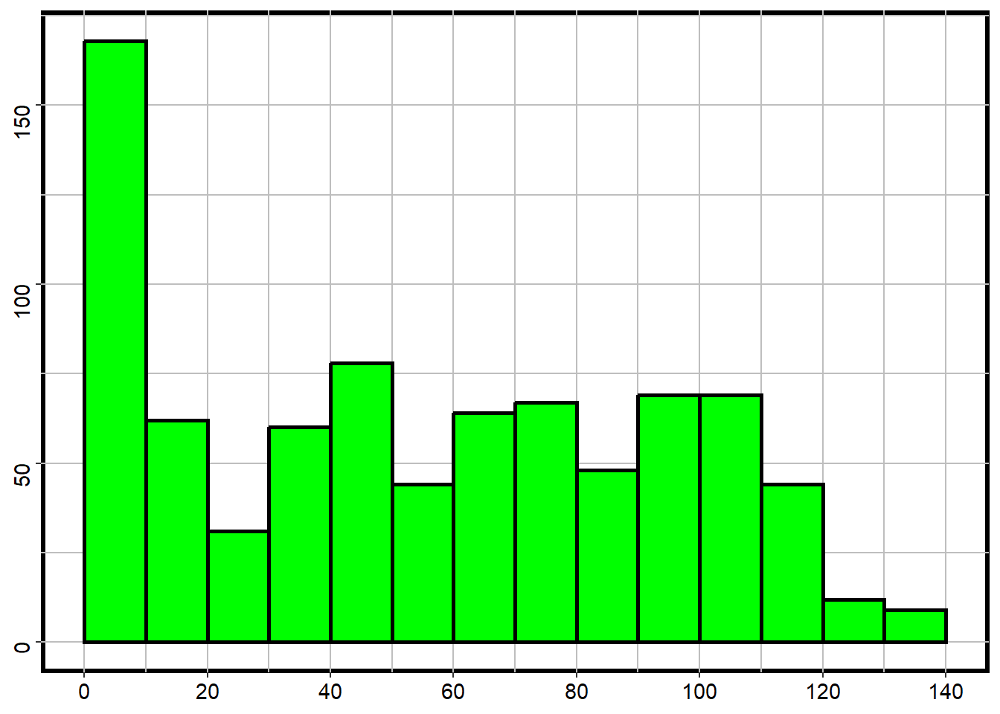
7.4.2 Calculating travel times
This section is skipped.
Catchment areas with buffers and isochrones
…you’ll want to analyze accessibility in a more local way. A common use case might involve a study of the demographic characteristics of a hospital catchment area, defined as the area around a hospital from which patients will likely come.
Use Iowa Methodist Medical Center in Des Moines as an example and the distance-based approach using a buffer, implemented with the sf::st_buffer().
Compute the 5k buffer around the Iowa Methodist Medical Center:
iowa_methodist_sf <- data.table::as.data.table(ia_trauma_sf) %>%
.[ID == 9850308,] %>%
sf::st_as_sf(.)
iowa_methodist_buf5km_sf <- sf::st_buffer(iowa_methodist_sf, dist = 5000) Plot the buffer with leaflet:
hospital_icon <- leaflet::makeAwesomeIcon(icon = "ios-medical",
markerColor = "red",
library = "ion")
iowa_methodist_buf5km_lf <- leaflet::leaflet() %>%
leaflet::addTiles() %>%
leaflet::addPolygons(data = sf::st_transform(iowa_methodist_buf5km_sf, 4326)) %>%
leaflet::addAwesomeMarkers(data = st_transform(iowa_methodist_sf, 4326),
icon = hospital_icon)
iowa_methodist_buf5km_lfFigure 7.17: Synced map showing buffer catchment areas in Des Moines
7.4.4 Computing demographic estimates for zones with areal interpolation
Note: this section has not been completed.
7.5 Better cartography with spatial overlay
Map the median household income by Census tract in Manhattan (New York County), NY
Get the median household income data:
ny_state_county_fips <- usmap::fips(state = "New York", county = "New York")
ny_state_fips <- substr(ny_state_county_fips, 1,2)
ny_county_fips <- substr(ny_state_county_fips, 3, 5)
ny_income_dt <- RcensusPkg::get_vintage_data(
dataset = "acs/acs5",
vintage = 2020,
vars = "B19013_001E",
region = "tract:*",
regionin = paste0("state:", ny_state_fips, "+county:", ny_county_fips)
) %>%
data.table::setnames(old = "B19013_001E", new = "median_income") %>%
.[, median_income := as.numeric(median_income)] %>%
.[median_income > 0.0]Get the New York county tract shapefiles and join with the above income data:
express <- expression(COUNTYFP == ny_county_fips)
ny_tracts_sf <- RcensusPkg::tiger_tracts_sf(
state = ny_state_fips,
vintage = 2020,
general = TRUE,
express = express,
datafile = ny_income_dt,
datafile_key = "GEOID",
sf_info = FALSE,
output_dir = output_dir
) %>%
data.table::as.data.table(.) %>%
.[, .(median_income, geometry)] %>%
sf::st_as_sf(.)Map the tract shapefiles and data:
RspatialPkg::get_geom_sf(
sf = ny_tracts_sf,
aes_fill = "median_income",
own_scale = T,
hide_x_tics = T,
hide_y_tics = T
) +
ggplot2::scale_fill_viridis_c(labels = scales::label_dollar())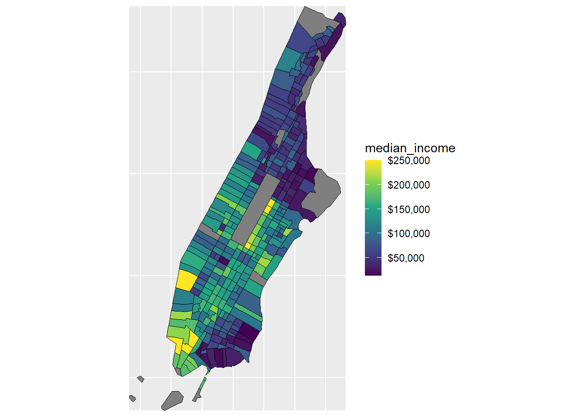
As illustrated in the graphic, the boundaries of Manhattan include water boundaries - stretching into the Hudson and East Rivers. In turn, a more accurate representation of Manhattan’s land area might be desired.
7.5.1 “Erasing” areas from Census polygons
Remove water area from the Census tracts of New York county.
Re-define the New York tracts by setting the general parameter to FALSE:
express <- expression(COUNTYFP == ny_county_fips)
ny_tracts_2_sf <- RcensusPkg::tiger_tracts_sf(
state = ny_state_fips,
vintage = 2020,
general = FALSE,
transform_crs = 6538,
express = express,
datafile = ny_income_dt,
datafile_key = "GEOID",
sf_info = FALSE,
output_dir = output_dir
) %>%
data.table::as.data.table(.) %>%
.[, .(median_income, geometry)] %>%
sf::st_as_sf(.)Use RcensusPkg::remove_area_water() to remove area water from the New York tracts:
ny_tracts_without_water_sf <- RcensusPkg::remove_area_water(ny_tracts_2_sf, output_dir = output_dir)Map the New York tracts both with and without water:
ny_tracts_with_water_plot <- RspatialPkg::get_geom_sf(
sf = ny_tracts_2_sf,
sf_fill = "green",
sf_alpha = 0.5,
hide_x_tics = T,
hide_y_tics = T,
show_legend = F
)
ny_tracts_without_water_plot <- RspatialPkg::get_geom_sf(
sf = ny_tracts_without_water_sf,
sf_fill = "green",
sf_alpha = 0.5,
hide_x_tics = T,
hide_y_tics = T,
show_legend = F
)
layout <- list(
plots = list(ny_tracts_with_water_plot, ny_tracts_without_water_plot),
rows = c(1, 1),
cols = c(1, 2)
)
ny_tracts_multi_plot <- RplotterPkg::multi_panel_grid(
layout = layout,
plot_titles = c("with water", "without water")
)
ny_tracts_multi_plot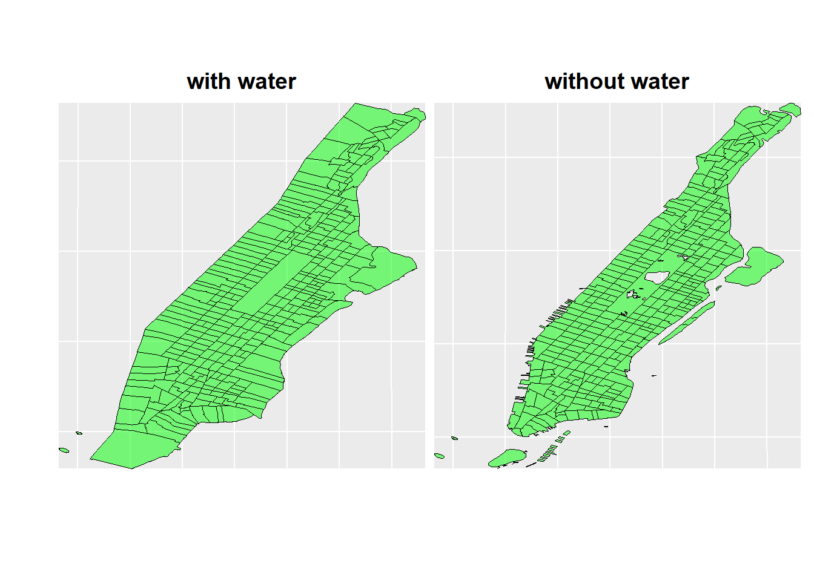
7.6 Spatial neighborhoods and spatial weights matrices
Explore spatial patterns and spatial clustering of a given demographic attribute (Exploratory Spatial Data Analysis or ESDA).
As an example, acquire a dataset on median age by Census tract in the Dallas-Fort Worth, TX metropolitan area:
tx_fips <- usmap::fips(state = "TX")
tx_tracts_median_age_dt <- RcensusPkg::get_vintage_data(
dataset = "acs/acs5",
vintage = 2020,
vars = "B01002_001E",
region = "tract:*",
regionin = paste0("state:", tx_fips)
) %>%
data.table::setnames(old = "B01002_001E", new = "median_age") %>%
.[, .(NAME, tract, median_age = as.numeric(median_age), GEOID)] %>%
.[median_age > 0,]Get the geometries for the Dallas area CBSA:
dallas_cbsa_sf <- RcensusPkg::tiger_cbsa_sf(
vintage = 2020,
state_filter = "TX",
city_filter = "Dallas-Fort Worth-Arlington",
general = T,
transform_crs = 32138,
sf_info = F,
output_dir = output_dir
)Get the Texas Census tracts and age data for just within the Dallas CBSA geometries:
dallas_tracts_median_age_sf <- RcensusPkg::tiger_tracts_sf(
state = tx_fips,
vintage = 2020,
general = T,
transform_crs = 32138,
datafile = tx_tracts_median_age_dt,
datafile_key = "GEOID",
output_dir = output_dir,
check_na = T,
sf_info = F
) %>%
sf::st_filter(dallas_cbsa_sf, .predicate = st_within)Plot the Dallas area tracts with their color coded median age:
dallas_tracts_median_age_plot <- RspatialPkg::get_geom_sf(
sf = dallas_tracts_median_age_sf,
aes_fill = "median_age",
own_scale = T,
hide_x_tics = T,
hide_y_tics = T
) +
scale_fill_viridis_c(na.value = "white")
dallas_tracts_median_age_plot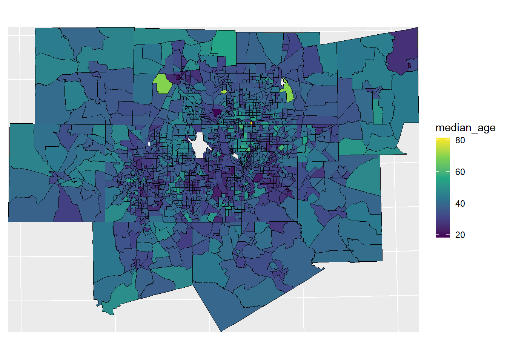
7.6.1 Understanding spatial neighborhoods
Using spdep::poly2nb() find polygons in the above Dallas median age shapefile that share at least one vertex to be considered neighbors.
neighbors_lst <- spdep::poly2nb(
pl = dallas_tracts_median_age_sf,
queen = TRUE
)
summary(neighbors_lst)Neighbour list object:
Number of regions: 1699
Number of nonzero links: 10930
Percentage nonzero weights: 0.378646
Average number of links: 6.433196
Link number distribution:
2 3 4 5 6 7 8 9 10 11 12 13 14 15 17
8 52 172 305 396 343 218 112 44 29 11 5 2 1 1
8 least connected regions:
707 1070 1097 1143 1239 1415 1503 1689 with 2 links
1 most connected region:
685 with 17 linksTract’s average number of neighbors: 6.4; Minimum: 2; Maximum: 17
Show the neighbors of the Census tract at row index 1:
neighbors_lst[[1]][1] 2 3 8 73 777.6.2 Generating the spatial weights matrix
To perform exploratory spatial data analysis, we can convert the neighbors list object into spatial weights. Spatial weights define how metrics associated with a feature’s neighbors should be weighted.
Convert the above neighbors list to a weights matrix.
weights_lst <- spdep::nb2listw(
neighbours = neighbors_lst,
style = "W"
)
weights_lst$weights[[1]][1] 0.2 0.2 0.2 0.2 0.2Row index 1 has five neighbors, each neighbor is assigned the weight 0.2
7.7 Global and local spatial autocorrelation
With respect to the exploratory spatial analysis of Census data, we might be interested in the degree to which a given Census variable clusters spatially, and subsequently where those clusters are found.
7.7.1 Spatial lags and Moran’s I
Compute the average median age for the neighbors of each Census tract in the Dallas-Fort Worth metropolitan area.
lag_v <- spdep::lag.listw(
x = weights_lst,
var = dallas_tracts_median_age_sf$median_age
)Draw a scatterplot of the ACS estimate vs. its lagged mean to do a preliminary assessment of spatial clustering in the data.
dt <- data.table::as.data.table(dallas_tracts_median_age_sf) %>%
.[, lag_median_age := lag_v]
RplotterPkg::create_scatter_plot(
df = dt,
aes_x = "median_age",
aes_y = "lag_median_age",
x_title = "Median Age",
y_title = "Spatial lag, median age"
) +
geom_abline(color = "red")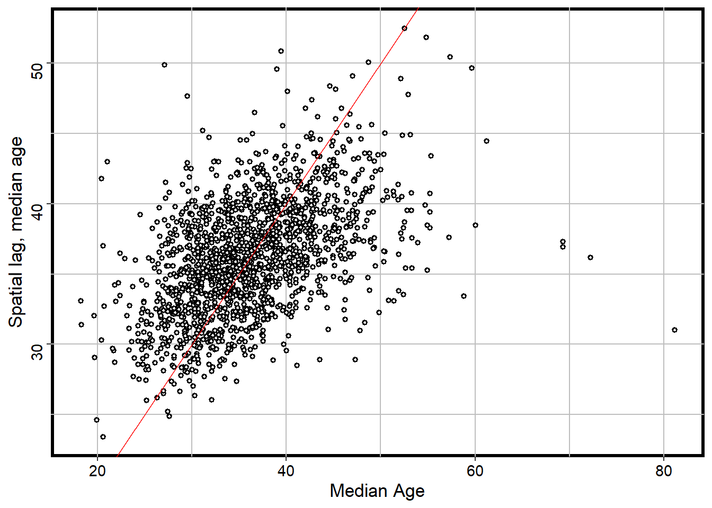
Compute Moran’s I, which is similar to a correlation coefficient but for the relationship between observations and their neighbors.
spdep::moran.test(
x = dallas_tracts_median_age_sf$median_age,
listw = weights_lst
)
Moran I test under randomisation
data: dallas_tracts_median_age_sf$median_age
weights: weights_lst
Moran I statistic standard deviate = 21.275, p-value < 2.2e-16
alternative hypothesis: greater
sample estimates:
Moran I statistic Expectation Variance
0.2926713016 -0.0005889282 0.0001900099 The Moran’s I statistic of 0.29 is positive, and the small p-value suggests that we reject the null hypothesis of spatial randomness in the dataset
7.7.2 Local spatial autocorrelation
Local measures of spatial autocorrelation disaggregate global results to identify “hot spots” of similar values within a given spatial dataset.
The equation (Gi*) computes a ratio of the weighted average of the neighborhood values to the total sum of values for the dataset. Results are returned as z-scores.
localg_weights_lst <- spdep::nb2listw(
spdep::include.self(neighbors_lst)
)
localG_v <- spdep::localG(
x = dallas_tracts_median_age_sf$median_age,
listw = localg_weights_lst
)Create a cholorplath map of the Dallas tracts based on their respective weighted neighbor tracts average of median age.
dallas_tracts_localG_sf <- data.table::as.data.table(dallas_tracts_median_age_sf) %>%
.[, localG := as.numeric(localG_v)] %>%
sf::st_as_sf(.)
RspatialPkg::get_geom_sf(
sf = dallas_tracts_localG_sf,
aes_fill = "localG",
own_scale = T,
hide_x_tics = T,
hide_y_tics = T
) +
scale_fill_distiller(palette = "RdYlBu")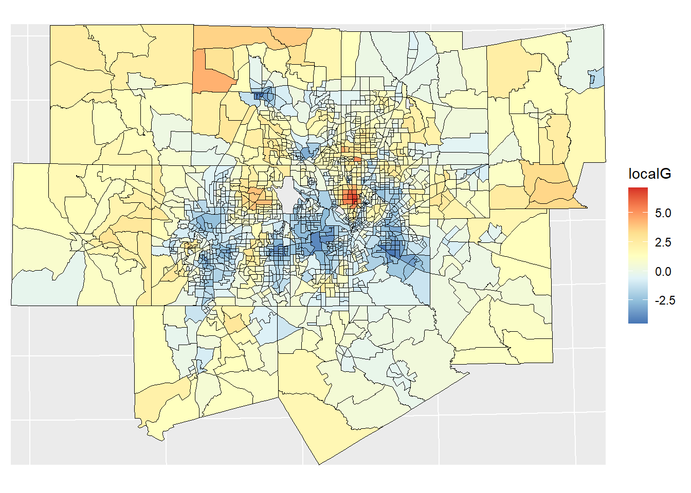
Use the Gi* z-scores from dallas_tracts_localG_sf to define values greater than 2.5 as a “High cluster” and below -2.5 as “Low cluster” and map these areas.
Add a column indicating the 3 levels:
dallas_tracts_localG_sf <- data.table::as.data.table(dallas_tracts_localG_sf) %>%
.[, hotspot := fcase(
localG >= 2.576, "High cluster",
localG <= -2.576, "Low cluster",
default = "Not significant"
)
] %>%
.[, hotspot := as.factor(hotspot)] %>%
sf::st_as_sf(.)Plot and color code the levels of cluster:
colors <- c("red","blue","grey")
names(colors) <- c("High cluster", "Low cluster", "Not significant")
RspatialPkg::get_geom_sf(
sf = dallas_tracts_localG_sf,
aes_fill = "hotspot",
sf_color = "white",
scale_values = colors,
scale_labels = names(colors),
hide_x_tics = T,
hide_y_tics = T,
panel_color = "white",
panel_border_color = "white"
) 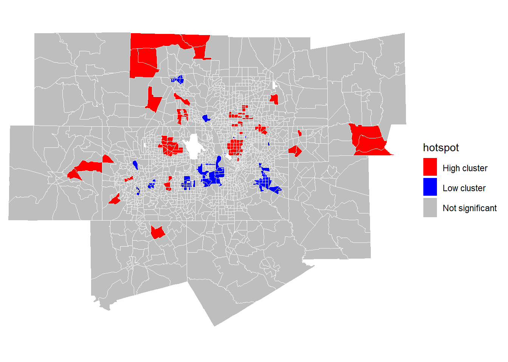
The red areas on the resulting map are representative of “high” clustering of median age, where neighborhoods with older populations are surrounded by other older-age neighbors. “Low” clusters are represented in blue, which reflect clustering of Census tracts with comparatively youthful populations.
7.7.3 Identifying clusters and spatial outliers with local indicators of spatial association (LISA)
One of the major benefits of using LISA for exploratory analysis is its ability to identify both spatial clusters, where observations are surrounded by similar values, and spatial outliers, where observations are surrounded by dissimilar values.
Compute the LISA values for median age among the Dallas tracts.
Set a random number seed and convert the median age to a z-score using scale():
set.seed(1983)
dallas_tracts_median_age_sf <- data.table::as.data.table(dallas_tracts_median_age_sf) %>%
.[, scaled_median_age := as.numeric(scale(median_age))] %>%
sf::st_as_sf(.)Compute LISA with localmoran_perm() for the scaled value of median age:
dallas_tracts_median_age_LISA_dt <- spdep::localmoran_perm(
x = dallas_tracts_median_age_sf$scaled_median_age,
listw = weights_lst,
nsim = 999L,
alternative = "two.sided"
) %>% data.table::as.data.table(.) %>%
data.table::setnames(old = colnames(.), new = c("local_i","exp_i","var_i","z_i","p_i","p_i_sim","pi_sim_folded","skewness","kurtosis"))Compute the lagged value of scaled_median_age using spdep::lag.listw():
lag_scaled_median_age_v <- spdep::lag.listw(
x = weights_lst,
var = dallas_tracts_median_age_sf$scaled_median_age
)Combine vectors/columns:
dallas_tracts_median_age_LISA_dt <- dallas_tracts_median_age_LISA_dt %>%
.[, `:=`(GEOID = dallas_tracts_median_age_sf$GEOID, scaled_median_age = dallas_tracts_median_age_sf$scaled_median_age, lagged_median_age = lag_scaled_median_age_v)]| GEOID | scaled_median_age | lagged_median_age |
|---|---|---|
| 48085030101 | -0.6163538 | 0.2278064 |
| 48085030102 | 1.3837469 | 0.0925054 |
| 48085030201 | -0.1457419 | -0.0254149 |
| 48085030202 | 0.8837218 | -0.1709532 |
| 48085030204 | -0.4987008 | -0.2290794 |
| 48085030205 | -0.8369531 | 0.0564742 |
From dallas_tracts_median_age_LISA_dt complete a LISA quadrant scatterplot.
dallas_tracts_median_age_LISA_dt[, lisa_cluster := fcase(
p_i >= 0.05, "Not significant",
scaled_median_age > 0 & local_i > 0, "High-high",
scaled_median_age > 0 & local_i < 0, "High-low",
scaled_median_age < 0 & local_i > 0, "Low-low",
scaled_median_age < 0 & local_i < 0, "Low-high"
)]
color_values <- c(`High-high` = "red",
`High-low` = "pink",
`Low-low` = "blue",
`Low-high` = "lightblue",
`Not significant` = "white"
)
RplotterPkg::create_scatter_plot(
df = dallas_tracts_median_age_LISA_dt,
aes_x = "scaled_median_age",
aes_y = "lagged_median_age",
aes_fill = "lisa_cluster",
x_title = "Median age (z-score)",
y_title = "Spatial lag of median age (z-score)",
pts_size = 2
) +
geom_hline(yintercept = 0, linetype = "dashed") +
geom_vline(xintercept = 0, linetype = "dashed") +
scale_fill_manual(values = color_values)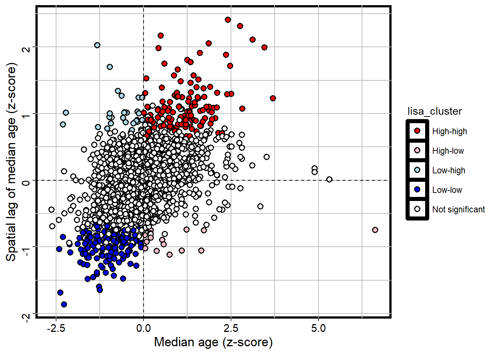
Observations falling in the top-right quadant represent “high-high” clusters, where Census tracts with higher than median age are also surrounded by Census tracts with older populations. The bottom-left quadrant also represents spatial clusters, but instead includes lower median age tracts that are surrounded by tracts with similarly low median ages. The top-left and bottom-right quadrants are home to spatial outliers, where values are dissimilar from their neighbors.
Map the cluster areas.
dallas_tracts_median_age_sf <- data.table::as.data.table(dallas_tracts_median_age_sf) %>%
.[, lisa_cluster := dallas_tracts_median_age_LISA_dt$lisa_cluster] %>%
sf::st_as_sf(.)
RspatialPkg::get_geom_sf(
sf = dallas_tracts_median_age_sf,
aes_fill = "lisa_cluster",
own_scale = T,
hide_x_tics = T,
hide_y_tics = T
) +
scale_fill_manual(values = color_values)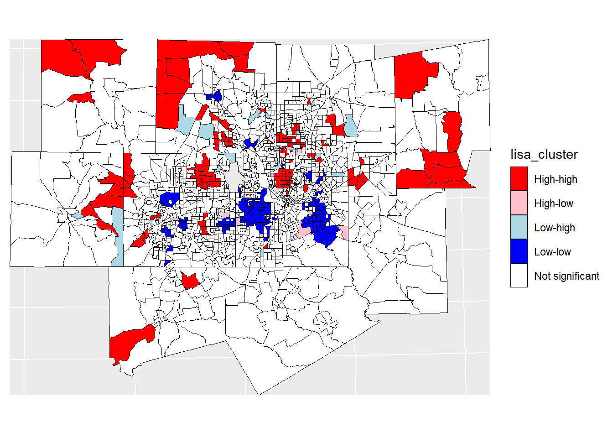
Older clusters are colored red; Younger clusters are dark blue; low-high clusters are Census tracts with large quantities of multifamily housing adjacent to predominantly single-family neighborhoods.